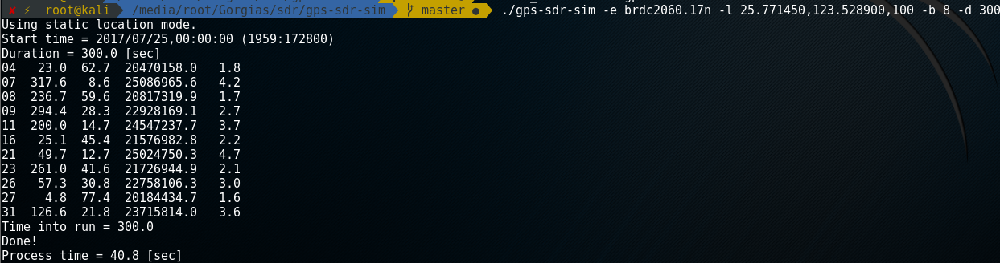
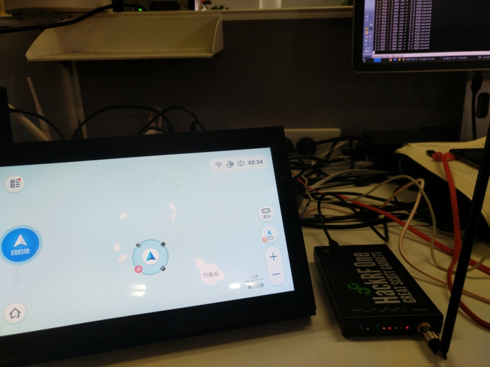

Preface
Leader lent me two HackRF Ones to play with, and I planned to use them for GPS spoofing experiments. It was my first time working with software-defined radio; I got interested immediately and decided to learn it seriously.

Test environment
There are two versions of the HackRF One on the market: the original US version and the “Xing Tian Wu Xian” version. The author, Mike Ossmann, successfully crowdfunded the first-generation HackRF Jawbreaker on Kickstarter, and later started developing the second-generation HackRF One. In the beginning, the open-source project’s code and documentation were all on GitHub. On March 13, 2014, a Chinese vendor called “Xing Tian Wu Xian” released the HackRF One “ahead of time.” In my tests, with the same firmware version, the Xing Tian version (because it includes a power amplifier) has stronger and much more stable signal strength than the US version. The antenna used was a suction-cup loaded whip antenna.
- Computer: HP 840 G3
- System: Kali 2016.2
- SDR: HackRF One (Xing Tian version / US version)
Setup
HackRF
To play with SDR, you can download the GNU Radio Live image.
You can also use other Linux distributions. Arch Linux’s official repositories include SDR-related tools. Kali ships with HackRF drivers and tools, so after plugging it into the computer you can type hackrf_info in the terminal to see device information.
hackrf_info version: 2017.02.1
libhackrf version: 2017.02.1 (0.5)
Found HackRF
Index: 0
Serial number: 0000000000000000583064c028624e4b
Board ID Number: 2 (HackRF One)
Firmware Version: 2017.02.1 (API:1.02)
Part ID Number: 0xa000cb3c 0x005d4f47
Before this, I upgraded the HackRF firmware, so the information shown here is for a newer version. Here are the upgrade steps as well—first flash the SPI firmware:
git clone https://github.com/mossmann/hackrf
cd ./firmware-bin/
hackrf_spiflash -Rw hackrf_one_usb.bin
Press the Reset button once, then update the CPLD:
hackrf_cpldjtag -x hackrf_cpld_default.xsvf
GPS-SDR-SIM
GPS-SDR-SIM is used to generate GPS baseband data streams for SDR platforms such as bladeRF, HackRF, and USRP. Download and build GPS-SDR-SIM:
git clone https://github.com/osqzss/gps-sdr-sim
cd gps-sdr-sim
gcc gpssim.c -lm -O3 -o gps-sdr-sim
Usage: gps-sdr-sim [options]
Options:
-e <gps_nav> RINEX navigation file for GPS ephemerides (required)
-u <user_motion> User motion file (dynamic mode)
-g <nmea_gga> NMEA GGA stream (dynamic mode)
-l <location> Lat,Lon,Hgt (static mode) e.g. 35.681298,139.766247,10.0
-t <date,time> Scenario start time YYYY/MM/DD,hh:mm:ss
-T <date,time> Overwrite TOC and TOE to scenario start time
-d <duration> Duration [sec] (dynamic mode max: 300, static mode max: 86400)
-o <output> I/Q sampling data file (default: gpssim.bin)
-s <frequency> Sampling frequency [Hz] (default: 2600000)
-b <iq_bits> I/Q data format [1/8/16] (default: 16)
-i Disable ionospheric delay for spacecraft scenario
-v Show details about simulated channels
GPS
GPS (Global Positioning System) requires a receiver to obtain signals from at least four satellites to determine an accurate position. Three satellites are used to compute coordinates based on WGS-84, and the fourth provides timing data to reduce errors caused by signal propagation time. The more satellites received, the more accurate the positioning. For more background, see Wiki: Global Positioning System.
Download GPS navigation broadcast ephemeris data from NASA’s CDDIS data center server, then decompress it (the filename ends with n).
ftp://cddis.gsfc.nasa.gov/pub/gps/data/daily/2017/brdc/brdc2060.17n.Z
It’s almost impossible to download under some domestic network conditions; it’s recommended to use a proxy.
proxychains4 -q wget ftp://cddis.gsfc.nasa.gov/pub/gps/data/daily/2017/brdc/brdc2060.17n.Z
7z e brdc2060.17n.Z
The file is updated daily; in practice, the exact day doesn’t matter much. This is the ephemeris filename format:
YYYY/brdc/brdcDDD0.YYn.Z
For the naming rules, refer to Broadcast ephemeris data.
After decompression, you can see the ephemeris data is in RINEX (Receiver Independent Exchange Format) 2.0 format.
GPS-SDR-SIM generates sampling data from the ephemeris file. The -T option can specify the time.
I chose the coordinates of the Diaoyu Islands on Amap, rounded to 6 decimal places, and added an arbitrary altitude, then placed them after the location parameter.
./gps-sdr-sim -e brdc2060.17n -l 25.771450,123.528900,100 -b 8 -d 200

The duration affects the output file size. The default is 300 seconds; I changed it to 200 seconds, which takes about 1GB of space. HackRF uses 8-bit IQ samples, so set iq_bits to 8.
Below is the detailed usage for hackrf_transfer:
specify one of: -t, -c, -r, -w
Usage:
-h # this help
[-d serial_number] # Serial number of desired HackRF.
-r <filename> # Receive data into file (use '-' for stdout).
-t <filename> # Transmit data from file (use '-' for stdin).
-w # Receive data into file with WAV header and automatic name.
# This is for SDR# compatibility and may not work with other software.
[-f freq_hz] # Frequency in Hz [0MHz to 7250MHz].
[-i if_freq_hz] # Intermediate Frequency (IF) in Hz [2150MHz to 2750MHz].
[-o lo_freq_hz] # Front-end Local Oscillator (LO) frequency in Hz [84MHz to 5400MHz].
[-m image_reject] # Image rejection filter selection, 0=bypass, 1=low pass, 2=high pass.
[-a amp_enable] # RX/TX RF amplifier 1=Enable, 0=Disable.
[-p antenna_enable] # Antenna port power, 1=Enable, 0=Disable.
[-l gain_db] # RX LNA (IF) gain, 0-40dB, 8dB steps
[-g gain_db] # RX VGA (baseband) gain, 0-62dB, 2dB steps
[-x gain_db] # TX VGA (IF) gain, 0-47dB, 1dB steps
[-s sample_rate_hz] # Sample rate in Hz (4/8/10/12.5/16/20MHz, default 10MHz).
[-n num_samples] # Number of samples to transfer (default is unlimited).
[-S buf_size] # Enable receive streaming with buffer size buf_size.
[-c amplitude] # CW signal source mode, amplitude 0-127 (DC value to DAC).
[-R] # Repeat TX mode (default is off)
[-b baseband_filter_bw_hz] # Set baseband filter bandwidth in Hz.
Possible values: 1.75/2.5/3.5/5/5.5/6/7/8/9/10/12/14/15/20/24/28MHz, default <= 0.75 * sample_rate_hz.
[-C ppm] # Set Internal crystal clock error in ppm.
[-H hw_sync_enable] # Synchronise USB transfer using GPIO pins.
The generated gpssim.bin has a sampling frequency of 2.6MHz, and the sampling frequency set in hackrf_transfer must match it. -x controls TX VGA gain; start with 0 dB, and increase if you can’t find it, up to a maximum of 47 dB. Below are civilian GPS bands; here we use the L1 band.
- L1 1575.42MHz
- L2 1227.60MHz
- L3 1381.05MHz
- L4 1841.40MHz
- L5 1176.45MHz
Use hackrf_transfer to transmit the RF signal, enable the amplifier, set gain to maximum, and repeat transmission in a loop.
hackrf_transfer -t gpssim.bin -f 1575420000 -s 2600000 -a 1 -x 47 -R

A USB GPS receiver can also receive spoofed data that conforms to the NMEA (National Marine Electronics Association) specification. For the data format, refer to NMEA data.

sudo microcom -s 4800 -p /dev/ttyUSB0

Here I used the US version of HackRF; in under a minute, the target device’s location was spoofed to the island.

This is the result of successful spoofing using the Xing Tian version.

 CC BY-NC-SA 4.0
CC BY-NC-SA 4.0